Donny Boy místo delfína při emulaci, čtení i zobrazení nálady. Verze 1.0.6 přináší sjednocenou grafiku, nápis NAHRAVAM a našich 12 animací jako výchozí součást aktualizace.
[ STAV VYDÁNÍ ] DONNY BOY 1.0.6 · vydání je dostupné · kompilace a balíčky ověřeny · fyzický test této verze zatím neproběhl.
ANDROID APLIKACE · 1.0.1 · NQLSH
DonnyBoy pro Android
Flipper, soubory a aktualizace na jednom místě. Aplikace se otevře rovnou na panelu instalace a aktualizace DONNY BOY CZ. Nový vzhled má černý podklad, stříbrný text a oranžové detaily.
Android 10 a novější · APK 106,6 MB · vydáno 24. listopadu 2026. Aplikace 1.0.1 a firmware 1.0.6 mají vlastní číslování verzí.
Co je nového v 1.0.1
Start přímo na panelu firmwaru, bez úvodní vstupní stránky.
Pouze instalace a aktualizace DONNY BOY CZ. Ostatní firmwary ani vlastní archiv „Custom“ už v nabídce nejsou.
Nová ikona kluka v kapuci, přepracované menu, ikony, karty, formuláře a horní lišty.
Navigace Panel, Trezor, Aplikace a Dílna. Správa souborů, nástroje i připojení přes Bluetooth a USB zůstávají zachované.
Upozornění na nový firmware
Na panelu otevři ⓘ → Zapnout oznámení a povol oznámení v Androidu. Aplikace pak na pozadí sleduje nová stabilní vydání DONNY BOY CZ.
První kontrola uloží současnou verzi; upozorní až na další. Android plánuje kontroly přibližně po 15 minutách a úspora baterie je může odložit. Sledování můžeš ve stejném místě vypnout.
APK je podepsané stejným klíčem jako verze 1.0.0, takže ho lze nainstalovat jako aktualizaci. U starého preview s jiným podpisem může Android vyžadovat odinstalování; tím se smažou místní data aplikace. Před vydáním prošla analýza kódu a všech 6 testů; ověřený je podpis a kontrolní součet. Připojení k fyzickému Flipperu zatím nebylo ověřené.
Vydání navazuje na 1.0.5 a sjednocuje výchozí grafiku celého systému.
Donny Boy se svislýma očima nahrazuje delfína při emulaci, příjmu a čtení signálů i ve sdílených výsledkových a varovných obrázcích NFC, RFID, Sub-GHz, iButton a infraportu.
Devět nových portrétů pasu rozlišuje tři nálady a tři úrovně. Donnyho mají také obě animace zvýšení úrovně, úvodní průvodce, Bluetooth, U2F, DFU, reset PINu a odpojení USB.
Aktualizátor zobrazuje přesný nápis NAHRAVAM vedle Donnyho kapuce; průběh a stavové hlášky zůstávají čitelné.
Výchozí SD kolekci tvoří pouze 12 scén DONNY BOY / DARK SIGNAL včetně čtyř automobilových scén, celkem 320 snímků. Je přímo v aktualizačním balíčku a nevyžaduje ruční kopírování ani přepínání motivu.
Ze zdrojů a nového SD balíčku je odstraněno 38 původních složek animací. Před přípravou SD prostředků se čistí generovaný výstup, aby se staré animace nevracely při inkrementálním sestavení.
Staré systémové prostředky aktualizátor odstraňuje podle dosavadního instalačního manifestu. Ručně kopírované soubory mimo manifest se hromadně nemažou a nový výchozí manifest je nevybírá.
Vestavěný DONNY BOY DARK SIGNAL funguje bez SD i při chybě načtení. Donnyho mají také blokující a záložní animace; uložená nálada, zkušenosti a úroveň zůstávají zachované.
Nahrazené jsou i samostatné kopie obrázků přibalených aplikací HID, T5577, testu Sub-GHz a ukázky obrázků. Soubory cizích FAP aplikací mohou mít vlastní grafiku.
Web a README mají přehled změn, aktuální galerii dvanácti GIFů a nové náhledy emulace, příjmu a nálad. Kontrola distribučního balíčku odmítá původní animace navíc.
Základ zůstává Unleashed dev 53818b18 z 16. listopadu 2026, API 88.27. Tato verze nepřidává nový upstream ani nové rádiové protokoly; zachovává funkce z DONNY BOY CZ 1.0.5.
Těchto 12 scén tvoří výchozí kolekci instalovanou spolu s firmwarem. Zachovávají svislé oči a původní mrkání; Donny je nově také v ostatních systémových obrázcích.
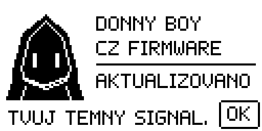
Česká obrazovka po aktualizaci
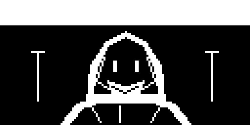
Detail svislých očí a mrknutí
DARK SIGNAL
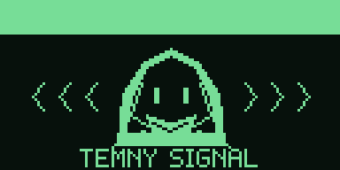
Kapuce
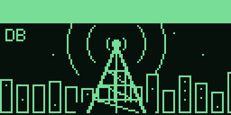
Noční vysílač
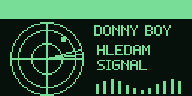
Radar
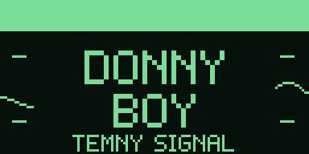
DONNY BOY
Kluk v kapuci
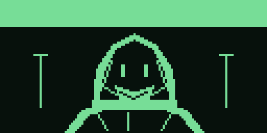
Dech a pohled
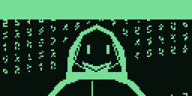
Matrix
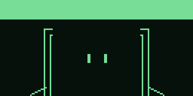
Kluk ve stínu
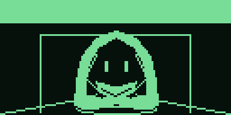
Prostorová kapuce
Automobilové scény
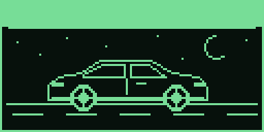
Noční auto
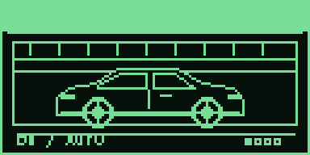
Auto v garáži
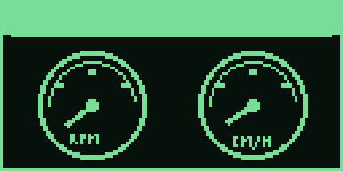
Přístrojová deska
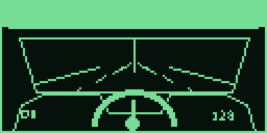
Noční jízda
GIFy vycházejí ze snímků přímo z vydání 1.0.6. Barvy simulují podsvícení displeje. Pro animace na microSD použij aktualizační balíček .tgz. Přehled a instalace animací.
01 // STAŽENÍ
Stažení firmwaru
Vydání obsahuje soubory firmwaru a balíčky sestavení. Před instalací ověř, že vybíráš správný soubor pro své zařízení. Soubory aktuální verze prošly automatickou kontrolou. Fyzický test starší verze 1.0.1 proběhl bez pozorovaných chyb.
Překlad uživatelského rozhraní je průběžná práce. Cílem jsou české texty na displeji bez háčků a čárek; zatím nelze tvrdit, že je přeložen úplně každý řetězec.
Unleashed dev · 16. 11. 2026 · API 88.27. Zdrojový základ 53818b18; vydání vychází z vývojové větve upstreamu.
Protokoly převzaté ve verzi 1.0.5
Protokol
Formát
Nová podpora
BelKorn
118 bitů, plovoucí kód
Korn / BelGate / Furniteh, vlastní tlačítka, ruční přidání
FAAC TM
12 bitů
Čtení, ukládání, vysílání a zadání TE
Freezer
24 bitů
Nový dekodér a enkodér
Proteco
24 bitů
Nový dekodér a enkodér
Přepracované Přidat ručně: jedna položka pro systém, frekvence a modulace v dalším kroku, obvyklá pásma systému na začátku seznamu. Pokročilé zadání TE pro Princeton, ZKTeco a FAAC TM; guard time pro Princeton a ZKTeco; discriminator Ds pro DEA Mio.
Čtení Sub-GHz zobrazuje konkrétní rozpoznaný systém u CAME, Nice FloR-S, FAAC SLH a KeeLoq. Opravená signalizace při zaplnění seznamu a mazání starých signálů; oprava interního rádia v CLI.
Nová aplikace Analyzátor ovladačů: čtení posledního signálu, analýza frekvence, dekódování uloženého RAW, hledání modulace a přelaďování. Navíc podporuje Crypt, Crypt Lite, Hormann BiSecur, KCE6xxx, Life Fido, Nero Intro II a PC4. BelGate je nově součástí hlavního protokolu BelKorn.
Nová aplikace T5577: čtení a ukládání bloků, úprava konfigurace a výpisů, zápis, test zapisovatelných bloků, vymazání a správa hesel. Navazující změny RFID zahrnují přehlednější výsledky zápisu a reorganizaci příslušných scén.
Oprava rozložení MfUltralightData pro kompatibilitu předkompilovaných NFC aplikací s NTAG/Ultralight; řeší také chybné hlášení hesla ve Weebo. Další převzaté opravy NFC, archivu, iButton, IR, GUI, úložiště a JavaScriptu.
Obnovené a doplněné české texty bez diakritiky v nových i změněných obrazovkách; kompletní český návod analyzátoru ovladačů. Zachované technické názvy a klíče souborových formátů.
Kratší hlášky PAMET PLNA a NAHRAVAM; dlouhé stavové texty aktualizátoru a T5577 se omezují podle dostupné šířky displeje.
Nové monochromatické logo DONNY BOY a česká obrazovka po aktualizaci. Při běžném restartu krátké uvítání na 1,2 sekundy; český průvodce prvním spuštěním má přednost.
Zachovaných 12 animací a 320 snímků. V pěti animacích postavy upravené svislé oči, 192 zpracovaných snímků, původní pohyby i načasování mrknutí; Matrix zůstává s deštěm znaků. Výchozí manifest obsahuje jen kolekci DONNY BOY.
Úspěšná kompilace a kontrola instalačních souborů. Fyzický test nové verze zatím neproběhl.
Řiď se oficiálním postupem aktualizace a pokyny projektu. Nezaměňuj DFU, update balíček a SDK.
Po aktualizaci ověř start zařízení a základní funkce.
Pokud si nejsi jistý, který soubor zvolit, nepokračuj naslepo — nejprve si ověř typ souboru a způsob instalace.
Bezpečnost a odpovědné použití
DONNY BOY není oficiální firmware Flipper Devices. Používej zařízení a jeho funkce pouze na vlastních systémech nebo s výslovným oprávněním a v souladu s platnými zákony.
Firmware je komunitní projekt poskytovaný bez záruky. Fyzický test starší verze 1.0.1 proběhl bez pozorovaných chyb. Aktuální verze má ověřené sestavení a distribuční soubory; fyzický test této verze zatím neproběhl.